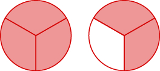
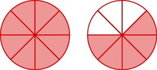

For any expression \(a^n\), \(a\) is a factor multiplied by itself \(n\) times if \(n\) is a positive integer. That is \[a ^n = \underbrace{a \cdot a \cdot \dots \cdot a}_{n \text{ times}}.\] The number \(a\) is the base and the number \(n\) is the exponent.
Write each expression in exponential form.
\(9\cdot 9 \cdot 9 \cdot 9 \cdot 9\)
\(16 \cdot 16 \cdot 16 \cdot 16 \cdot 16 \cdot 16 \cdot 16\)
\(4 \cdot 4 \cdot 4 \cdot 5 \cdot 5 \cdot 7 \cdot 7 \cdot 7 \cdot 7\)
Write each exponential expression in standard form.
\(8^6\)
Simplify the following.
\(3 ^ 4\)
\(4 ^ 3\)
\(2^3 \cdot 3 ^ 2\)
Write each expression in exponential form.
\(7 \cdot 7 \cdot 7 \cdot 7 \cdot 7 \cdot 7 \cdot 7 \cdot 7 \cdot 7\)
\(41 \cdot 41 \cdot 41 \cdot 41 \cdot 41\)
\(3 \cdot 3 \cdot 4 \cdot 4 \cdot 12 \cdot 12 \cdot 12 \cdot 12\)
Write each exponential expression in standard form.
\(4^8\)
Simplify the following.
\(7^2\)
\(5^3\)
\(1^9\)
\(4^2\cdot3^2\)
A number whose square is \(m\) is called a square root of \(m\). That is, if \(n^2 = m\), then \(n\) is a square root of \(m\).
Every positive number has two square roots: one positive and one negative.
The positive square root is called the principle square root is denoted with a radical sign: \(\sqrt{m}\).
Simplify the following.
\(\sqrt{25}\)
\(\sqrt{121}\)
Simplify the following.
\(\sqrt{16}\)
\(\sqrt{169}\)
When simplifying mathematical expressions, perform the operations in the following order:
Parentheses and grouping symbols, working on the innermost parentheses first.
Exponents
Multiplication and Division left to right.
Addition and Subtraction left to right.
Simplify.
\(3 \cdot 8 - 5 \cdot 2\)
\(20 \div 4 + 6 \cdot 5\)
\(20 \div (4 + 6)\cdot5\)
\(3(1 + 9 \cdot 6) - 4\)
Simplify.
\(4 + 6 (3 + 6)\)
\(6 + 10 \div 2 + 2\)
\(33 \div (3 + 8) \cdot 2\)
\(5 \left[2 + 4 (3 - 2) \right]\)
A fraction is written \(\frac{a}{b}\), where \(a\) and \(b\) are whole numbers and \(b \neq 0\).
The denominator is the bottom number and tells how many parts make a whole.
The numerator is the top number and tells how many parts are in the measurement.
Any number (except 0) divided by itself is 1.
Any number divided by 1 is the same number.
Zero divided by any number (except 0) is 0.
Dividing a number (except 0) by 0 is undefined.
Zero divided by zero is indeterminate.
A fraction is a proper fraction if the numerator is less than the denominator.
A fraction is an improper fraction if the numerator is greater than or equal to the denominator.
A mixed number consists of a whole number and a proper fraction.
Name the improper fraction. Write it as a mixed number.


Multiply the whole number by the denominator.
Add the numerator to the product found in Step 1.
Write the final sum over the original denominator.
Convert the mixed numbers into improper fractions.
\(10 \frac27\)
\(4 \frac6{11}\)
Convert the mixed numbers into improper fractions.
\(1 \frac5{16}\)
\(11 \frac13\)
Divide the denominator into the numerator.
Identify the quotient, remainder, and divisor.
Write the mixed number as \[\text{quotient} \frac{\text{remainder}}{\text{divisor}}.\]
Convert the improper fractions into mixed numbers.
\(\frac{33}8\)
\(\frac{183}5\)
Convert the improper fractions into mixed numbers.
\(\frac{23}7\)
\(\frac{48}{11}\)
When two numbers are multiplied together, each number is called a factor. The answer to the multiplication is called the product.
A prime number is a whole number greater than 1 whose only factors are 1 and itself.
A composite number is a whole number that is not prime.
The prime factorization of a number is the product of prime numbers that equals the number.
Find all factors of the following numbers.
\(22\)
\(72\)
Identify the following numbers as either prime or composite.
\(83\)
\(77\)
Find the prime factorization of the following numbers.
\(36\)
\(80\)
\(588\)
Find all factors of the following numbers.
\(18\)
\(96\)
Identify the following numbers as either prime or composite.
\(57\)
\(91\)
Find the prime factorization of the following numbers.
\(60\)
\(126\)